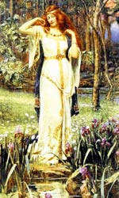

Брісінгі або брістлінгі, в скандинавської міфології таємничі власники чудесного золотого намиста Брісінгамен, яке прагнула мати богиня родючості Фрейя. Щоб роздобути його, вона заплатила своєю любов'ю всім чотирьом брісінгам - Альфрігу, рефератів, Берлінго і Греру, изготовившим прикраса. Обурений цим вчинком, Один дорікнув її в приниженні божественного гідності і в покарання змусив розв'язати війну на землі людей, в Мідгард. Загиблих в боях вони ділили навпіл.
Однозначне тлумачення цього міфу утруднено в першу чергу неясним походженням брісінгов. Однак більш правдоподібною є версія, що "плата любов'ю" символізує тілесну сторону любові, зокрема сліпу пристрасть і хіть. Ніщо, навіть осуд Одіна, не могло зупинити прекрасну богиню, що забажала отримати дорогоцінну прикрасу. Брісінгамен так тісно з'єдналося з образом Фрей, що коли Тор вирішив переодягнутися в її плаття, щоб відібрати у трюмі свій молот, вона позичила йому намисто для більшої переконливості.
Брісінгамен, вишукане намисто, було схоже на рідкий вогонь. Богиня Фрейя, охоплена бажанням отримати коштовність, заплатила за неї дорогу ціну, але витончена прикраса так посилило її красу, що вона не знімала його навіть вночі. Намисто Брісінгамен в міфах тісно поєдналося з образом Фрей і було одним з невід'ємних атрибутів богині. На її чарівної шиї воно виглядало символом плодів земних і небесних, виблискуючи подібно до зірок нічного неба. Сльози самої Фрей, а вона багато плакала під час пошуків зниклого чоловіка одуром, перетворювалися в золото, а потрапляючи в море, зверталися в бурштин.